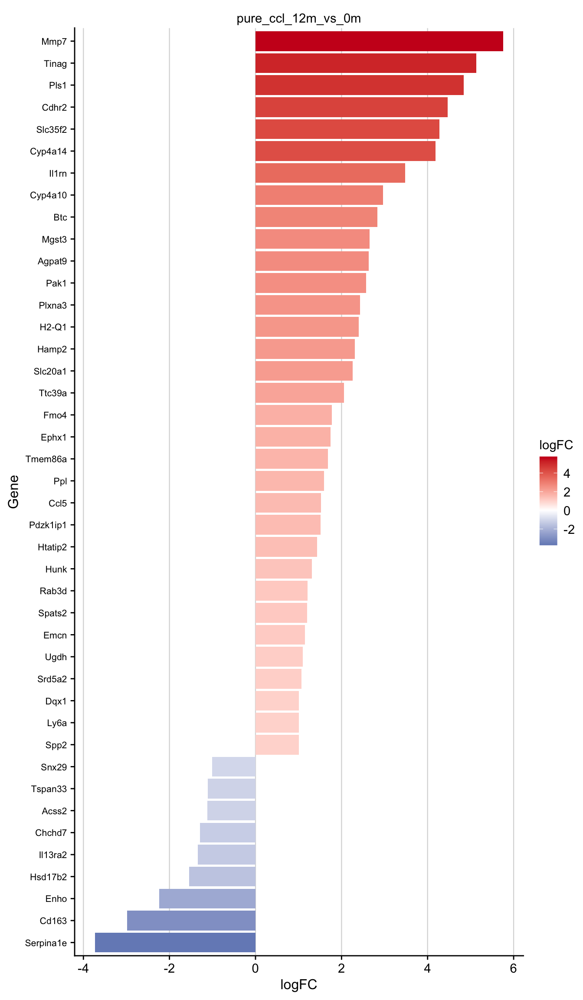

Analysis of ‘tolerance’ genes
Last updated: 2022-12-08
Checks: 7 0
Knit directory: cirrhosis-metabolism/
This reproducible R Markdown analysis was created with workflowr (version 1.7.0). The Checks tab describes the reproducibility checks that were applied when the results were created. The Past versions tab lists the development history.
Great! Since the R Markdown file has been committed to the Git repository, you know the exact version of the code that produced these results.
Great job! The global environment was empty. Objects defined in the global environment can affect the analysis in your R Markdown file in unknown ways. For reproduciblity it’s best to always run the code in an empty environment.
The command set.seed(20221024) was run prior to running
the code in the R Markdown file. Setting a seed ensures that any results
that rely on randomness, e.g. subsampling or permutations, are
reproducible.
Great job! Recording the operating system, R version, and package versions is critical for reproducibility.
Nice! There were no cached chunks for this analysis, so you can be confident that you successfully produced the results during this run.
Great job! Using relative paths to the files within your workflowr project makes it easier to run your code on other machines.
Great! You are using Git for version control. Tracking code development and connecting the code version to the results is critical for reproducibility.
The results in this page were generated with repository version 0258d2a. See the Past versions tab to see a history of the changes made to the R Markdown and HTML files.
Note that you need to be careful to ensure that all relevant files for
the analysis have been committed to Git prior to generating the results
(you can use wflow_publish or
wflow_git_commit). workflowr only checks the R Markdown
file, but you know if there are other scripts or data files that it
depends on. Below is the status of the Git repository when the results
were generated:
Ignored files:
Ignored: .DS_Store
Ignored: .Rhistory
Ignored: .Rproj.user/
Ignored: analysis/.DS_Store
Ignored: data/README.html
Ignored: data/annotation/
Ignored: data/data.zip
Ignored: data/meta-mouse-vs-human/
Ignored: data/mouse-chronic-ccl4/
Ignored: data/output.zip
Ignored: output/mouse-chronic-ccl4/
Ignored: output/seddik/
Ignored: renv/library/
Ignored: renv/sandbox/
Ignored: renv/staging/
Unstaged changes:
Modified: data/download_data.R
Note that any generated files, e.g. HTML, png, CSS, etc., are not included in this status report because it is ok for generated content to have uncommitted changes.
These are the previous versions of the repository in which changes were
made to the R Markdown (analysis/tolerance_genes.Rmd) and
HTML (docs/tolerance_genes.html) files. If you’ve
configured a remote Git repository (see ?wflow_git_remote),
click on the hyperlinks in the table below to view the files as they
were in that past version.
| File | Version | Author | Date | Message |
|---|---|---|---|---|
| html | 0258d2a | christianholland | 2022-12-07 | Build site. |
| Rmd | 9ef8432 | christianholland | 2022-12-07 | wflow_publish("analysis/*.Rmd") |
| html | 535b720 | christianholland | 2022-12-01 | Build site. |
| Rmd | 4715892 | christianholland | 2022-11-29 | wflow_publish("analysis/*.Rmd") |
Introduction
In this analysis I check the expression of 210 genes (in the following referred to as ‘tolerance’ genes) in the 1 year CCl4 chronic liver disease mouse model
Libraries and sources
These libraries and sources are used for this analysis.
# data wrangling
library(tidyverse)
library(readxl)
# statistics
library(fgsea)
# plotting
library(lemon)
library(tidytext)
library(plotly)
library(scales)
# colors
library(AachenColorPalette)
library(RColorBrewer)
# display tables
library(DT)
# development helpers
library(here)
library(devtools)
base_url <- "https://raw.githubusercontent.com/saezlab/liver-disease-atlas"
source_url(file.path(base_url, "master", "code", "utils-plots.R"))
source_url(file.path(base_url, "master", "code", "utils-utils.R"))Definition of global variables that are used throughout this analysis.
Annotate genes
# extract gene names
genes <- read_excel(here("data/annotation/210genes.xlsx")) |>
select(entrez = EntrezID, gene = Symbol) |>
arrange(gene)
saveRDS(genes, here(output_path, "genes_of_interest.rds"))Coverage
How many of those 210 genes are covered in the dataset?
Table of the ‘tolerance’ indicating whether the gene is covered in the dataset
Enrichment analysis
Enrichment analysis of the ‘tolerance’ genes within the 12 month CCl4 signature.
The tolerance genes are significantly enriched in the up-regulated
genes of the 12 month CCl4 signature

| Version | Author | Date |
|---|---|---|
| bacff3d | christianholland | 2022-11-29 |
Differentially expressed genes
Bar plots of the differentially expressed ‘tolerance’ genes (abs(logFC) >= 1 & FDR <= 0.05) at time point 12 month 
| Version | Author | Date |
|---|---|---|
| bacff3d | christianholland | 2022-11-29 |
Trajectories
Time course of ‘tolerance’ genes that are differentially expressed in at least one time point (either 2, 6 or 12 months). These are interactive plots. Hovering with the mouse over the dots will show the gene name.
This table summarizes the genes that are displayed in the trajectories plot
R version 4.2.1 (2022-06-23)
Platform: x86_64-apple-darwin17.0 (64-bit)
Running under: macOS Big Sur ... 10.16
Matrix products: default
BLAS: /Library/Frameworks/R.framework/Versions/4.2/Resources/lib/libRblas.0.dylib
LAPACK: /Library/Frameworks/R.framework/Versions/4.2/Resources/lib/libRlapack.dylib
locale:
[1] de_DE.UTF-8/de_DE.UTF-8/de_DE.UTF-8/C/de_DE.UTF-8/de_DE.UTF-8
attached base packages:
[1] stats graphics grDevices datasets utils methods base
other attached packages:
[1] devtools_2.4.5.9000 usethis_2.1.6 here_1.0.1
[4] DT_0.26 RColorBrewer_1.1-3 AachenColorPalette_1.1.3
[7] scales_1.2.1 plotly_4.10.0 tidytext_0.3.4
[10] lemon_0.4.5 fgsea_1.22.0 readxl_1.4.1
[13] forcats_0.5.2 stringr_1.4.1 dplyr_1.0.10
[16] purrr_0.3.5 readr_2.1.3 tidyr_1.2.1
[19] tibble_3.1.8 ggplot2_3.3.6 tidyverse_1.3.2
[22] workflowr_1.7.0
loaded via a namespace (and not attached):
[1] googledrive_2.0.0 colorspace_2.0-3 ellipsis_0.3.2
[4] rprojroot_2.0.3 fs_1.5.2 rstudioapi_0.14
[7] farver_2.1.1 remotes_2.4.2 SnowballC_0.7.0
[10] fansi_1.0.3 lubridate_1.8.0 xml2_1.3.3
[13] codetools_0.2-18 cachem_1.0.6 knitr_1.40
[16] pkgload_1.3.0 jsonlite_1.8.3 broom_1.0.1
[19] dbplyr_2.2.1 shiny_1.7.2 compiler_4.2.1
[22] httr_1.4.4 backports_1.4.1 assertthat_0.2.1
[25] Matrix_1.4-1 fastmap_1.1.0 lazyeval_0.2.2
[28] gargle_1.2.1 cli_3.4.1 later_1.3.0
[31] htmltools_0.5.3 prettyunits_1.1.1 tools_4.2.1
[34] gtable_0.3.1 glue_1.6.2 fastmatch_1.1-3
[37] Rcpp_1.0.9 cellranger_1.1.0 jquerylib_0.1.4
[40] vctrs_0.5.0 crosstalk_1.2.0 xfun_0.34
[43] ps_1.7.1 rvest_1.0.3 mime_0.12
[46] miniUI_0.1.1.1 lifecycle_1.0.3 renv_0.16.0
[49] googlesheets4_1.0.1 getPass_0.2-2 hms_1.1.2
[52] promises_1.2.0.1 parallel_4.2.1 curl_4.3.3
[55] yaml_2.3.6 memoise_2.0.1 gridExtra_2.3
[58] sass_0.4.2 stringi_1.7.8 highr_0.9
[61] tokenizers_0.2.3 pkgbuild_1.3.1 BiocParallel_1.30.4
[64] rlang_1.0.6 pkgconfig_2.0.3 evaluate_0.17
[67] lattice_0.20-45 labeling_0.4.2 htmlwidgets_1.5.4
[70] cowplot_1.1.1 processx_3.7.0 tidyselect_1.2.0
[73] plyr_1.8.7 magrittr_2.0.3 R6_2.5.1
[76] profvis_0.3.7 generics_0.1.3 DBI_1.1.3
[79] pillar_1.8.1 haven_2.5.1 whisker_0.4
[82] withr_2.5.0 janeaustenr_1.0.0 modelr_0.1.9
[85] crayon_1.5.2 utf8_1.2.2 urlchecker_1.0.1
[88] tzdb_0.3.0 rmarkdown_2.17 grid_4.2.1
[91] data.table_1.14.4 callr_3.7.2 git2r_0.30.1
[94] reprex_2.0.2 digest_0.6.30 xtable_1.8-4
[97] httpuv_1.6.6 munsell_0.5.0 viridisLite_0.4.1
[100] bslib_0.4.0 sessioninfo_1.2.2